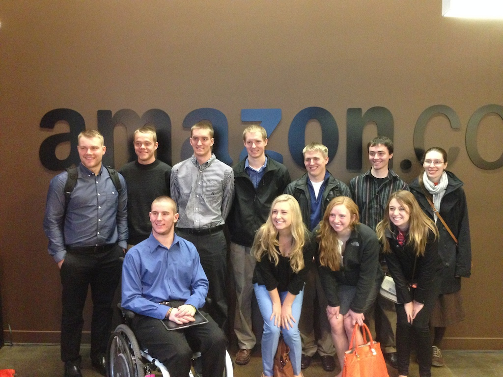

JTerm 2014 - Day 1 at Amazon
Jeff Bezos likes to talk about technology and civilization and where we are at in terms of the analogy that we are still at "Day One." He recently observed that we are so early in Day One that the alarm clock hasn't even gone off yet.
With new technologies, it’s very tempting to think that you’re further along than you are. But usually, you’re more primitive than you think. My guess is we’re still pretty primitive. We as a society, as a civilization. I doubt we have figured out the new technologies very well yet. At Amazon, we’re doing our part in trying to push things forward, but I have the feeling it’s Day One.
And so it was that we found ourselves in the building called Day One South, meeting with our very gracious host Sam. This was a great way to start, and although Sam had not been prompted in any way about what to say, he hit on some of key themes for the students to take away from the course:
-
Passion -- You are going to work long hours, so you want to find a place to work and a job to do at that place where you are passionate about whatever it is. If you aren't excited about it, keep looking.
-
Culture -- This part of the discussion brought back both great memories and ulcers in my stomach from the days when Amazon was a Net Perceptions customer. I've never been pushed harder than I was by Jennifer Jacobi (JJ) when she was my primary contact at Amazon. She challenged us, held our feet to the fire, threatened to dump us, and ultimately helped us create a better product. Apparently this is how Amazon treats all its suppliers.
-
Risk -- High tech companies are full of risk takers. Sam was no exception as a young graduate who simply moved to Seattle in search of a job. Years later he is still at Amazon. Many more years later than he expected.

After our meeting with Amazon we found a coffee shop where we could take over a large table and had some group discussion. I told my own story of Net Perceptions, which I should probably write down here soon, and tried to relate my own experience with the themes I want the students to look for over the next three weeks.
Comments